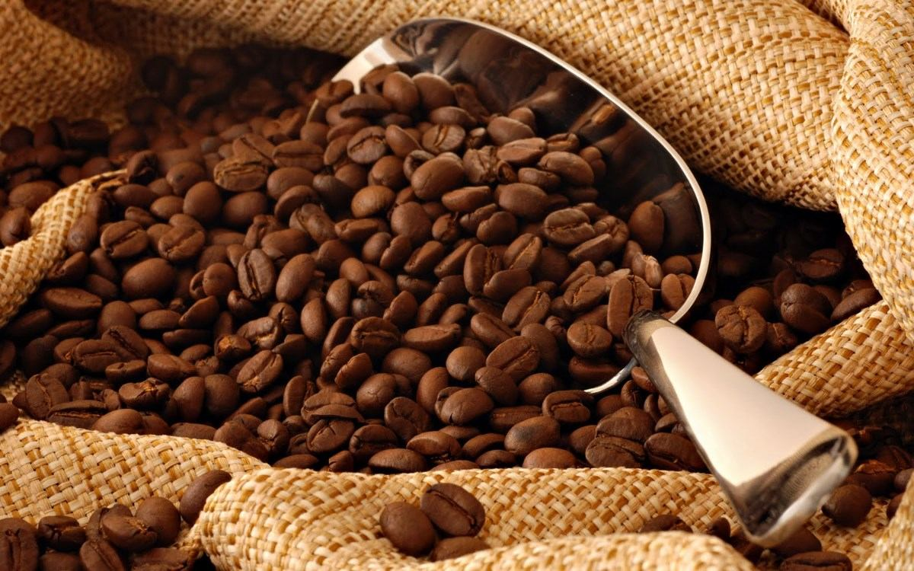
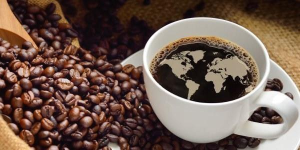

Veja na nossa galeria de fotos várias belas imagens que mostram algumas das principais características do café 3 colinas, como a qualidade e sabor que estão impressionando os consumidores da região. Basta passar o mouse sobre uma das fotos para ver uma versão ampliada e com uma breve descrição.
Colheita do café
Torra do café
Aroma do café
Transporte do café
Comercialização do café
Café Pronto
Quem Somos ?
Localizada em Franca/SP, parte integrante da Alta Mogiana, próximo ao Sul de Minas Gerais, reconhecida mundialmente como região produtora de cafés finos.

Fundada em 1987, a sede da empresa foi o primeiro empreendimento do Distrito Industrial de Franca vislumbrando uma oportunidade de ofertar ao consumidor francano um produto diferenciado e aproveitando a excelente qualidade dos grãos de café produzidos na região.

O nome café 3 colinas foi a identificação perfeita com a cafeicultura e imediatamente percebida pelo consumidor (as três colinas são características físicas da cidade de Franca/SP).
A boa aceitação, a facilidade de atendimento e a comunicação adequada foram os fatores que levaram ao crescimento de mercado e da marca.